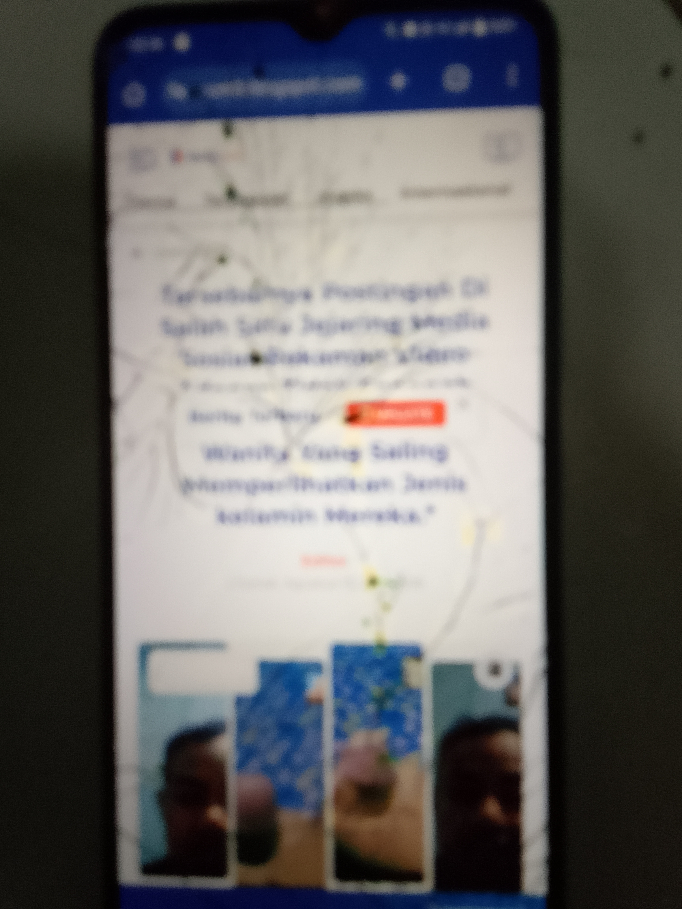
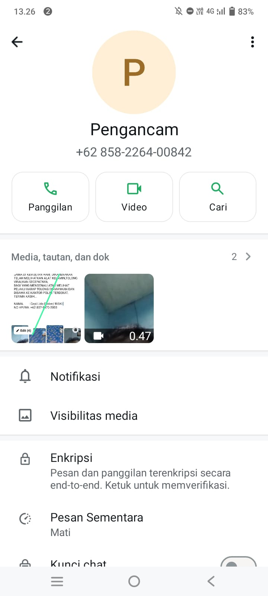
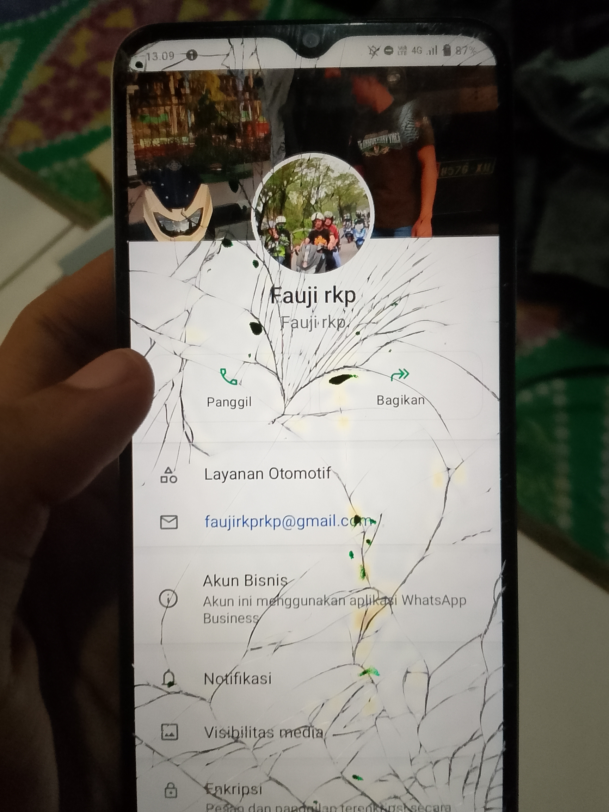

HATI-HATI PENIPUAN! IMING-IMING VIDEO PORNO & VCS MENJADI MODUS BARU
Wanita Yang Saling Memperlihatkan Jenis kelamin Mereka.
UPDATE
Editor | Jumat, Agustus 15, 2025 | WIB



Dalam beberapa minggu terakhir, marak kasus penipuan dengan modus
mengiming-imingi korban untuk melakukan video call seks (VCS) atau mengirimkan
video pribadi bersifat pornografi. Pelaku biasanya menghubungi korban melalui
media sosial atau aplikasi chat, lalu memancing dengan foto dan video dewasa.
Setelah korban terjebak, pelaku merekam aktivitas tersebut dan mengancam akan
menyebarkannya jika tidak diberi uang.
Pihak kepolisian mengimbau masyarakat agar tidak mudah percaya dengan tawaran
serupa, serta segera melaporkan ke aparat jika menemukan kasus yang mencurigakan.